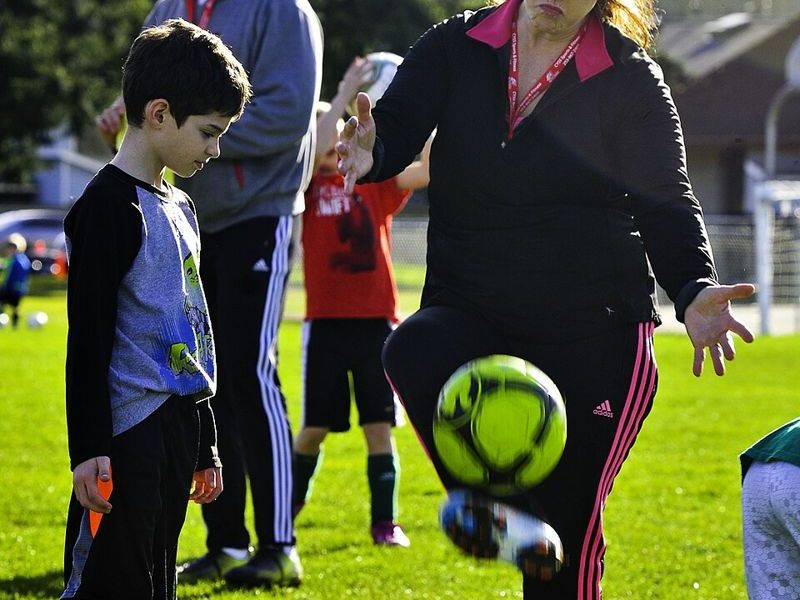
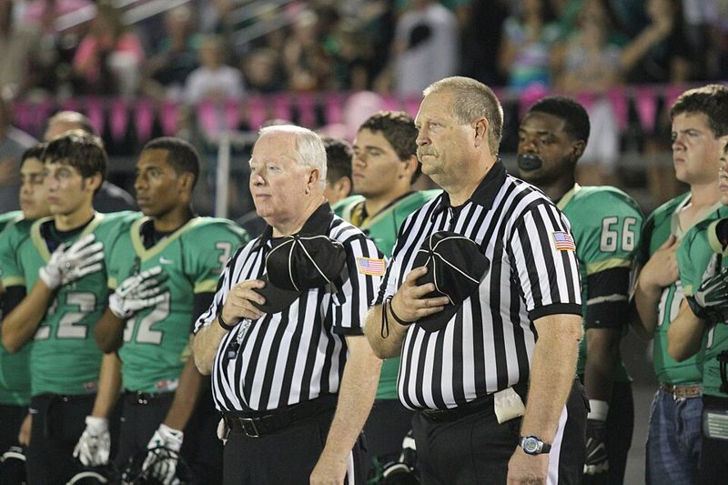

Stay In The Game
Sometimes you are done playing but you are not done with the sport. Maybe your body cannot take it anymore, or maybe you just miss being around it more than you miss actually playing. Either way there are a few ways to stay in it, and the cool part is the stuff you learned from playing all those years is exactly what makes you good at them.
Coaching


Coaching is probably the closest thing to playing. You still have practice, you still have game day, and you still get that feeling when your team pulls one out. Youth teams are always looking for help because a lot of the coaches are just parents who got volunteered. If you played at any level past that, you already know more than you think you do.
The easiest way in is to start as an assistant for a youth team in your area. Leagues usually want you to fill out an application and pass a background check before you work with kids, so plan for that. After a season of helping out you will know pretty fast if you want to run your own team.
Officiating


Nobody grows up wanting to be the ref, but honestly it might be the best way to stay on the actual field. You are right there in the game, you are moving the whole time, and you usually get paid for it. If you are willing to learn the rule book and take some yelling from parents, there is a good chance somebody near you needs refs.
To start, look up the officials association for your sport in your state. They normally have you take a class and a rules test, and then you start out working youth or lower level games before you move up. Former players tend to pick it up fast since you already know what the game is supposed to look like.
Volunteering
If coaching or reffing is too much of a commitment, just helping out counts too. Running the clock or the chains, keeping the book, helping set up a youth tournament, all of that keeps you around the sport and the people in it. It is also a really low pressure way to figure out if you would want to coach or ref later.
Which One Fits You
- If what you miss most is the team and the game plan, try coaching.
- If what you miss most is being on the field and moving, try officiating.
- If you just miss being around it and your schedule is crazy, start by volunteering.
If you can still play at all, do not skip the Keep Playing page either. You can totally coach on Saturday and play rec on Tuesday.